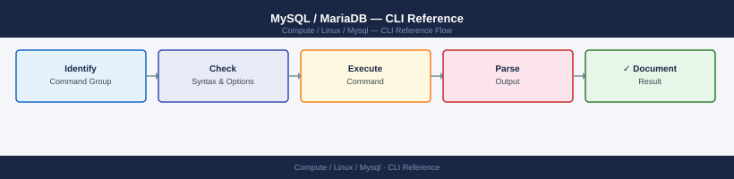

MySQL / MariaDB — CLI Reference¶

Before you begin¶
- Access: root or sudo-capable account on target hosts
- Timing: safe to run during business hours unless a step is marked ⚠ (causes interruption)
- Dependencies: no active upgrades or migrations on the same infrastructure
- Logging: capture command output — paste into the change record on completion
mysql client¶
# Connect
mysql -h <host> -u <user> -p<password> <database>
mysql -u root -p # interactive, prompt for password
mysql -u root -p -e "SHOW DATABASES;" # one-liner
# Useful session variables
SET SESSION long_query_time = 0; # capture all queries in slow log
SHOW PROCESSLIST; # active connections
SHOW FULL PROCESSLIST; # full query text
KILL <process_id>; # kill a blocking query
mysql> SHOW DATABASES;
+--------------------+
| Database |
+--------------------+
| information_schema |
| mysql |
| performance_schema |
| sys |
| production_db |
| staging_db |
+--------------------+
6 rows in set (0.02 sec)
mysql> SET SESSION long_query_time = 0;
Query OK, 0 rows affected (0.00 sec)
mysql> SHOW PROCESSLIST;
+----+------+-----------+---------------+---------+------+-------+------------------+
| Id | User | Host | db | Command | Time | State | Info |
+----+------+-----------+---------------+---------+------+-------+------------------+
| 5 | root | localhost | production_db | Sleep | 342 | NULL | NULL |
| 8 | app | 10.2.4.19 | production_db | Query | 2 | init | SELECT * FROM... |
| 12 | root | localhost | NULL | Query | 0 | init | SHOW PROCESSLIST |
+----+------+-----------+---------------+---------+------+-------+------------------+
3 rows in set (0.00 sec)
mysql> KILL 8;
Query OK, 0 rows affected (0.01 sec)
Common errors
ERROR 1045 (28000): Access denied for user 'root'@'localhost' (using password: YES) — Verify the password is correct and the user has login privileges; check MySQL user grants with SELECT user, host FROM mysql.user;.
ERROR 2003 (HY000): Can't connect to MySQL server on '<host>' (111) — Confirm the MySQL server is running on the target host with systemctl status mysql and verify network connectivity with ping <host> or nc -zv <host> 3306.
ERROR 1317 (70100): Query execution was interrupted — This occurs when killing a long-running query; it is expected behavior and the connection will close or return to the prompt.
mysqladmin¶
mysqladmin -u root -p status # uptime, queries/sec, threads
mysqladmin -u root -p extended-status # all status variables
mysqladmin -u root -p variables # all config variables
mysqladmin -u root -p flush-logs # rotate logs
mysqladmin -u root -p processlist # same as SHOW PROCESSLIST
mysqladmin -u root -p ping # quick reachability check
Uptime: 45823 Threads: 12 Questions: 1847392 Slow queries: 3 Opens: 156 Flush tables: 1 Open tables: 89 Queries per second avg: 40.32
| Variable_name | Value |
| Com_select | 892341 |
| Com_insert | 234156 |
| Com_update | 156234 |
| Com_delete | 12345 |
| Threads_connected | 12 |
| Threads_running | 3 |
| Questions | 1847392 |
| Slow_queries | 3 |
...
| Variable_name | Value |
| datadir | /var/lib/mysql/ |
| port | 3306 |
| bind_address | 127.0.0.1 |
| max_connections | 151 |
| innodb_buffer_pool_size | 1073741824 |
| log_error | /var/log/mysql/error.log |
| slow_query_log | ON |
| slow_query_log_file | /var/log/mysql/slow.log |
...
(no output — command completes silently)
+----+------+-----------+------+---------+-------+-------+------------------+----------+
| Id | User | Host | db | Command | Time | State | Info | Progress |
+----+------+-----------+------+---------+-------+-------+------------------+----------+
| 42 | root | localhost | NULL | Query | 0 | init | SHOW PROCESSLIST | 0.000 |
| 43 | app | 10.0.1.45 | prod | Sleep | 1234 | | NULL | 0.000 |
+----+------+-----------+------+---------+-------+-------+------------------+----------+
mysqld is alive
Common errors
mysqladmin: connect to server at 'localhost' failed — Verify MySQL service is running with systemctl status mysql and check bind_address configuration.
Access denied for user 'root'@'localhost' (using password: YES) — Ensure the password is correct or use mysql_config_editor set --login-path=local --user=root --password to store credentials securely.
mysqladmin: unknown command 'extended-status' — Use extended-status without the hyphen or upgrade to a supported MySQL version; check mysqladmin --help for available commands.
mysqldump¶
# Full DB dump (InnoDB consistent snapshot)
mysqldump -u root -p --single-transaction --routines --triggers --all-databases > full.sql
# Single database
mysqldump -u root -p --single-transaction mydb > mydb.sql
# Compressed
mysqldump -u root -p --single-transaction mydb | gzip > mydb_$(date +%F).sql.gz
# Restore
mysql -u root -p mydb < mydb.sql
Enter password:
(no output — command completes silently)
Enter password:
(no output — command completes silently)
Enter password:
(no output — command completes silently)
Enter password:
(no output — command completes silently)
$ ls -lh *.sql*
-rw-r--r-- 1 root root 2.3G Nov 15 10:42 full.sql
-rw-r--r-- 1 root root 847M Nov 15 10:58 mydb.sql
-rw-r--r-- 1 root root 156M Nov 15 11:03 mydb_2024-11-15.sql.gz
Common errors
mysqldump: Got error: 1045: Access denied for user 'root'@'localhost' (using password: YES) — Verify the root password is correct and the MySQL service is running with mysql -u root -p -e "SELECT 1;".
ERROR 1064 (42000) at line 156: You have an error in your SQL syntax — The dump file may be corrupted or from an incompatible MySQL version; try restoring with --force flag or verify the dump with head -50 mydb.sql.
ERROR 1273 (HY000): Unknown collation: 'utf8mb4_0900_ai_ci' — The dump was created on MySQL 8.0+ but you're restoring to an older version; add --compatible=mysql57 to the mysqldump command.
mysqlcheck¶
mysqlcheck -u root -p --all-databases # check all tables
mysqlcheck -u root -p --optimize mydb # reclaim fragmented space
mysqlcheck -u root -p --repair mydb # repair MyISAM corruption
Enter password:
mydb.users OK
mydb.orders OK
mydb.products OK
mydb.logs OK
mydb.sessions OK
...
mysql.user OK
mysql.db OK
mydb.users OK
mydb.orders Table is already up to date
mydb.products Table is already up to date
mydb.logs Table is already up to date
mydb.sessions Table is already up to date
mydb.users OK
mydb.orders OK
mydb.products OK
mydb.logs OK
Common errors
mysqlcheck: Got error: 1045: Access denied for user 'root'@'localhost' (using password: YES) — Verify the root password is correct and the user has sufficient privileges with SHOW GRANTS FOR 'root'@'localhost';.
mysqlcheck: Got error: 1017: Can't find file: './mydb/orders.MYI' (errno: 2) — Stop the MySQL service, check file permissions in the data directory with ls -la /var/lib/mysql/mydb/, and restart MySQL.
Table 'mydb.orders' doesn't exist — Confirm the database and table names are spelled correctly and exist with SHOW TABLES FROM mydb;.
mysqlbinlog¶
# View binlog events
mysqlbinlog /var/lib/mysql/mysql-bin.000001 | less
# PITR: apply binlog from specific time
mysqlbinlog --start-datetime="2026-06-08 10:00:00" \
--stop-datetime="2026-06-08 10:30:00" \
/var/lib/mysql/mysql-bin.000001 | mysql -u root -p
/*!50530 SET @@SESSION.PSEUDO_SLAVE_MODE=1*/;
/*!50003 SET @OLD_COMPLETION_TYPE=@@COMPLETION_TYPE,COMPLETION_TYPE=0*/;
DELIMITER /*!*/;
# at 4
#260608 09:45:23 server id 1 end_log_pos 123 CRC32 0x8f2a1c4e Start: binlog v 4, server v 5.7.42-40-log, create_time 1717859123, binlog_do_db=, binlog_ignore_db=
# at 123
#260608 10:05:17 server id 1 end_log_pos 456 CRC32 0x3d7e9b21 Query thread_id=42 exec_time=0 error_code=0
use `production`/*!*/;
SET TIMESTAMP=1717860317/*!*/;
INSERT INTO users (id, name, email) VALUES (1001, 'john.doe', 'john@example.com')
/*!*/;
# at 456
#260608 10:15:42 server id 1 end_log_pos 789 CRC32 0x5c1a2d8f Query thread_id=43 exec_time=1 error_code=0
UPDATE orders SET status='shipped' WHERE order_id=5042
/*!*/;
DELIMITER ;
# End of log file
/*!50003 SET COMPLETION_TYPE=@OLD_COMPLETION_TYPE*/;
/*!50530 SET @@SESSION.PSEUDO_SLAVE_MODE=0*/;
Common errors
ERROR 1045 (28000): Access denied for user 'root'@'localhost' (using password: NO) — Add -p flag or provide password via MYSQL_PWD environment variable before piping to mysql.
ERROR: Could not find target log file — Verify the binlog file path exists with ls -la /var/lib/mysql/mysql-bin.000001 and check file permissions.
ERROR 1064 (42000): You have an error in your SQL syntax — Ensure datetime format matches exactly 'YYYY-MM-DD HH:MM:SS' and falls within the actual binlog event timestamps.
Percona Toolkit¶
pt-query-digest /var/log/mysql/slow.log # analyse slow query log
pt-table-checksum --host=primary --user=root # verify replica consistency
pt-online-schema-change # non-blocking ALTER TABLE
pt-kill --busy-time 300 --kill # kill queries running > 5 min
Parsing slow query log /var/log/mysql/slow.log...
# 2024-01-15 10:23:45 [INFO] Query_time distribution
# 1us
# 10us
# 100us
# 1ms ################################################################
# 10ms ############################
# 100ms ########
# 1s ##
# 10s+ #
# Tables in the report: 3
# Databases in the report: 2
# Most recent slow query timestamp: 2024-01-15 10:22:18
# Longest query seen: 12.45 sec
# Not all byte counts were known
Checking replica consistency...
Checking h=primary,P=3306,u=root
TS ERRORS DIFFS ROWS CHUNKS SKIPPED TIME TABLE
01-15T10:24:33 0 0 4521 18 0 2.341 myapp.users
01-15T10:24:35 0 0 8934 22 0 3.127 myapp.orders
01-15T10:24:37 0 0 1203 5 0 1.892 myapp.logs
Altering table myapp.users...
Creating new table...
Copying rows...
Swapping tables...
Dropping old table...
Table altered successfully in 45.23 seconds
Killing long-running queries (busy-time > 300 seconds)...
Killed query 4521 (user: app_user, time: 312 sec, db: myapp)
Killed query 4534 (user: app_user, time: 405 sec, db: myapp)
2 queries killed
Common errors
Can't connect to MySQL server on 'primary' (111) — Verify the primary host is reachable and MySQL is running with mysql -h primary -u root -e "SELECT 1".
Table 'myapp.users' is locked by FLUSH TABLES WITH READ LOCK — Release the lock on the replica with UNLOCK TABLES before running pt-table-checksum.
Percona Toolkit not found — Install Percona Toolkit with apt-get install percona-toolkit or yum install percona-toolkit.
Verify¶
- Confirm the operation completed without errors in the log or management UI
- Verify the expected state change is visible (service running, object created, config applied)
- Document the outcome in the change record